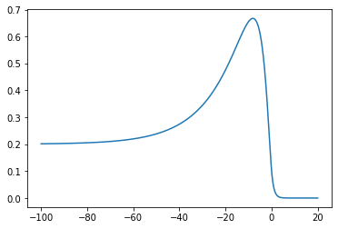
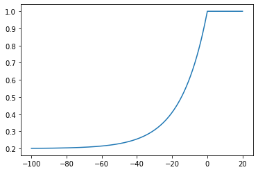

import matplotlib.pyplot as plt
import numpy as np
import sympy as sym
sympy_modules = [{'Heaviside': lambda x: np.heaviside(x,0.5)}, 'numpy']Traveling Front Derivation
The model in characteristic coordinates is \[\begin{align*} -c\mu U' &= -U + \int_{\mathbb{R}}w(\xi, y) Q(y) f[U(y)] \ dy \\ -c \alpha Q' &= 1 - Q - \alpha \beta Q f[U] \end{align*}\] Take \(f(\cdot) = H(\cdot - \theta)\) and \(w(x,y) = \frac{1}{2}e^{-|x-y|}\).
params
c, α, β, μ, θ = sym.symbols(r'c \alpha \beta \mu \theta', real=True)
numeric_sub = {
α: 20,
β: .2,
μ: 1,
θ: .1
}Q
ξ, y = sym.symbols(r'\xi y', real=True)
Q = sym.Function('Q')(ξ)
Q_left = sym.dsolve(1 - Q - α*β*Q + c*α*Q.diff(ξ), ics={Q.subs(ξ,0): 1}).args[1].simplify().collect(sym.exp((1+α*β)/(c*α)*ξ))
Q_right = 1
Q_sol = sym.Piecewise((Q_left, ξ<0), (Q_right, True))
display(sym.Eq(Q, Q_sol))\(\displaystyle Q{\left(\xi \right)} = \begin{cases} \frac{\alpha \beta e^{\frac{\xi \left(\alpha \beta + 1\right)}{\alpha c}} + 1}{\alpha \beta + 1} & \text{for}\: \xi < 0 \\1 & \text{otherwise} \end{cases}\)
U
U = sym.Function('U')(ξ)If \(\xi > 0\) then \[ -c \mu U' + U = \frac{1}{2} e^{-\xi} \int_{-\infty}^0 e^y Q(y) \ dy \]
integral_options = sym.integrate(sym.exp(y) * Q_left.subs(ξ, y), (y, -sym.oo, 0))
# this integral evaluates to different values depending on the parameters
print('Assume')
display(integral_options.args[0].args[1])
integral = integral_options.args[0].args[0]
rhs = sym.Rational(1,2)*sym.exp(-ξ)*integralAssume\(\displaystyle \alpha \neq - \frac{1}{\beta + c}\)
sol_right_obj = sym.dsolve(-c*μ*U.diff(ξ) + U - rhs).simplify()
print('Assume')
display(sol_right_obj.args[1].args[0].args[1])
sol_left_not_constrained = sol_right_obj.args[1].args[0].args[0].expand().powsimp()Assume\(\displaystyle \mu \neq - \frac{1}{c}\)
cond = sol_left_not_constrained.collect(sym.exp(ξ)).coeff(sym.exp(-ξ)).factor()
U_right = cond*sym.exp(-ξ)If \(\xi < 0\) then we will have two terms in the forcing \[ -c \mu U' + U = \frac{1}{2}e^{-\xi} \int_{-\infty}^\xi e^y Q(y) \ dy + \frac{1}{2}e^\xi \int_{\xi}^0 e^{-y}Q(y) \ dy \]
integral1_options = sym.integrate(sym.exp(y)*Q_left.subs(ξ, y), (y, -sym.oo, ξ))print('Assume')
display(integral1_options.args[0].args[1])
integral1 = integral1_options.args[0].args[0].expand().powsimp()
display(integral1)Assume\(\displaystyle \alpha \neq - \frac{1}{\beta + c}\)
\(\displaystyle \frac{\alpha^{2} \beta c e^{\frac{\beta \xi}{c} + \xi + \frac{\xi}{\alpha c}}}{\alpha^{2} \beta^{2} + \alpha^{2} \beta c + 2 \alpha \beta + \alpha c + 1} + \frac{\alpha \beta e^{\xi}}{\alpha^{2} \beta^{2} + \alpha^{2} \beta c + 2 \alpha \beta + \alpha c + 1} + \frac{\alpha c e^{\xi}}{\alpha^{2} \beta^{2} + \alpha^{2} \beta c + 2 \alpha \beta + \alpha c + 1} + \frac{e^{\xi}}{\alpha^{2} \beta^{2} + \alpha^{2} \beta c + 2 \alpha \beta + \alpha c + 1}\)
A1, A2 = sym.symbols('A_1 A_2', real=True)
coeffs = [A1, A2]
terms = [sym.exp(ξ),
sym.exp((α*β + α*c + 1)/(α*c)*ξ)]
sub_dict = {
A1: integral1.coeff(sym.exp(ξ)),
A2: integral1.coeff(sym.exp(β*ξ/c + ξ + ξ/α/c))
}
new_integral1 = sum(c*f for c, f in zip(coeffs, terms))
assert((new_integral1.subs(sub_dict) - integral1).simplify() == 0)integral2_options = sym.integrate(sym.exp(-y)*Q_left.subs(ξ, y), (y, ξ, 0))print('Assume')
display(integral2_options.args[0].args[1])
integral2 = integral2_options.args[0].args[0].expand().powsimp()
display(integral2)Assume\(\displaystyle \alpha \neq \frac{1}{- \beta + c}\)
\(\displaystyle \frac{\alpha^{2} \beta c e^{\frac{\beta \xi}{c} + \frac{\xi}{\alpha c}}}{- \alpha^{2} \beta^{2} e^{\xi} + \alpha^{2} \beta c e^{\xi} - 2 \alpha \beta e^{\xi} + \alpha c e^{\xi} - e^{\xi}} - \frac{\alpha^{2} \beta c}{- \alpha^{2} \beta^{2} + \alpha^{2} \beta c - 2 \alpha \beta + \alpha c - 1} - \frac{\alpha \beta}{- \alpha^{2} \beta^{2} e^{\xi} + \alpha^{2} \beta c e^{\xi} - 2 \alpha \beta e^{\xi} + \alpha c e^{\xi} - e^{\xi}} + \frac{\alpha \beta}{- \alpha^{2} \beta^{2} + \alpha^{2} \beta c - 2 \alpha \beta + \alpha c - 1} + \frac{\alpha c}{- \alpha^{2} \beta^{2} e^{\xi} + \alpha^{2} \beta c e^{\xi} - 2 \alpha \beta e^{\xi} + \alpha c e^{\xi} - e^{\xi}} - \frac{\alpha c}{- \alpha^{2} \beta^{2} + \alpha^{2} \beta c - 2 \alpha \beta + \alpha c - 1} - \frac{1}{- \alpha^{2} \beta^{2} e^{\xi} + \alpha^{2} \beta c e^{\xi} - 2 \alpha \beta e^{\xi} + \alpha c e^{\xi} - e^{\xi}} + \frac{1}{- \alpha^{2} \beta^{2} + \alpha^{2} \beta c - 2 \alpha \beta + \alpha c - 1}\)
B1, B2, B3 = sym.symbols('B_1, B_2, B_3', real=True)
coeffs = [B1, B2, B3]
terms = [1, sym.exp(-ξ), sym.exp((α*β - α*c + 1)/(α*c) * ξ)]
sub_dict[B3] = (integral2.coeff(sym.exp(β*ξ/c + ξ/α/c))*sym.exp(ξ)).simplify()
sub_dict[B1] = sum(arg for arg in integral2.args if ξ not in arg.free_symbols)
sub_dict[B2] = (integral2 - sub_dict[B1] - terms[2]*sub_dict[B3]).simplify().coeff(sym.exp(-ξ))
new_integral2 = sum(c*f for c, f in zip(coeffs, terms))
assert((new_integral2.subs(sub_dict) - integral2).simplify() == 0)rhs.expand().powsimp()\(\displaystyle \frac{\alpha^{2} \beta c}{2 \alpha^{2} \beta^{2} e^{\xi} + 2 \alpha^{2} \beta c e^{\xi} + 4 \alpha \beta e^{\xi} + 2 \alpha c e^{\xi} + 2 e^{\xi}} + \frac{\alpha \beta}{2 \alpha^{2} \beta^{2} e^{\xi} + 2 \alpha^{2} \beta c e^{\xi} + 4 \alpha \beta e^{\xi} + 2 \alpha c e^{\xi} + 2 e^{\xi}} + \frac{\alpha c}{2 \alpha^{2} \beta^{2} e^{\xi} + 2 \alpha^{2} \beta c e^{\xi} + 4 \alpha \beta e^{\xi} + 2 \alpha c e^{\xi} + 2 e^{\xi}} + \frac{1}{2 \alpha^{2} \beta^{2} e^{\xi} + 2 \alpha^{2} \beta c e^{\xi} + 4 \alpha \beta e^{\xi} + 2 \alpha c e^{\xi} + 2 e^{\xi}}\)
rhs = sym.Rational(1,2)*sym.exp(-ξ)*new_integral1 + sym.Rational(1,2)*sym.exp(ξ)*new_integral2
sol_left_obj = sym.dsolve(-c*μ*U.diff(ξ) + U - rhs.expand().powsimp(),
ics={U.subs(ξ,0): θ},
hint='nth_linear_constant_coeff_undetermined_coefficients')U_left = sol_left_obj.args[1].subs(sub_dict)U_sol = sym.Piecewise((U_left, ξ <0), (U_right, True))U_sol\(\displaystyle \begin{cases} - \frac{\alpha^{3} \beta c e^{\frac{\xi \left(\beta + \frac{1}{\alpha}\right)}{c}}}{2 \left(\alpha \beta \mu - \alpha + \mu\right) \left(\alpha^{2} \beta^{2} + \alpha^{2} \beta c + 2 \alpha \beta + \alpha c + 1\right)} - \frac{\alpha^{3} \beta c e^{\frac{\xi \left(\beta + \frac{1}{\alpha}\right)}{c}}}{2 \left(\alpha \beta \mu - \alpha + \mu\right) \left(- \alpha^{2} \beta^{2} + \alpha^{2} \beta c - 2 \alpha \beta + \alpha c - 1\right)} + \frac{\alpha \beta}{2 \left(\alpha^{2} \beta^{2} + \alpha^{2} \beta c + 2 \alpha \beta + \alpha c + 1\right)} + \frac{\alpha c}{2 \left(\alpha^{2} \beta^{2} + \alpha^{2} \beta c + 2 \alpha \beta + \alpha c + 1\right)} + \frac{\left(\frac{\alpha^{3} \beta \mu c^{2}}{\alpha^{2} \beta^{2} + \alpha^{2} \beta c + 2 \alpha \beta + \alpha c + 1} + \frac{\alpha^{3} \beta \mu c^{2}}{- \alpha^{2} \beta^{2} + \alpha^{2} \beta c - 2 \alpha \beta + \alpha c - 1} - \frac{\alpha^{3} \beta c}{\alpha^{2} \beta^{2} + \alpha^{2} \beta c + 2 \alpha \beta + \alpha c + 1} - \frac{\alpha^{3} \beta c}{- \alpha^{2} \beta^{2} + \alpha^{2} \beta c - 2 \alpha \beta + \alpha c - 1} + 2 \alpha \beta \mu^{2} \theta c - \alpha \beta \mu^{2} c \left(\frac{\alpha \beta}{\alpha^{2} \beta^{2} + \alpha^{2} \beta c + 2 \alpha \beta + \alpha c + 1} + \frac{\alpha c}{\alpha^{2} \beta^{2} + \alpha^{2} \beta c + 2 \alpha \beta + \alpha c + 1} + \frac{1}{\alpha^{2} \beta^{2} + \alpha^{2} \beta c + 2 \alpha \beta + \alpha c + 1}\right) - \frac{\alpha \beta \mu^{2} c}{\alpha \beta + 1} - 2 \alpha \beta \mu \theta + \alpha \beta \mu \left(\frac{\alpha \beta}{\alpha^{2} \beta^{2} + \alpha^{2} \beta c + 2 \alpha \beta + \alpha c + 1} + \frac{\alpha c}{\alpha^{2} \beta^{2} + \alpha^{2} \beta c + 2 \alpha \beta + \alpha c + 1} + \frac{1}{\alpha^{2} \beta^{2} + \alpha^{2} \beta c + 2 \alpha \beta + \alpha c + 1}\right) + \alpha \beta \mu \left(- \frac{\alpha^{2} \beta c}{- \alpha^{2} \beta^{2} + \alpha^{2} \beta c - 2 \alpha \beta + \alpha c - 1} + \frac{\alpha \beta}{- \alpha^{2} \beta^{2} + \alpha^{2} \beta c - 2 \alpha \beta + \alpha c - 1} - \frac{\alpha c}{- \alpha^{2} \beta^{2} + \alpha^{2} \beta c - 2 \alpha \beta + \alpha c - 1} + \frac{1}{- \alpha^{2} \beta^{2} + \alpha^{2} \beta c - 2 \alpha \beta + \alpha c - 1}\right) + \frac{\alpha \beta \mu}{\alpha \beta + 1} - 2 \alpha \mu \theta c + \alpha \mu c \left(\frac{\alpha \beta}{\alpha^{2} \beta^{2} + \alpha^{2} \beta c + 2 \alpha \beta + \alpha c + 1} + \frac{\alpha c}{\alpha^{2} \beta^{2} + \alpha^{2} \beta c + 2 \alpha \beta + \alpha c + 1} + \frac{1}{\alpha^{2} \beta^{2} + \alpha^{2} \beta c + 2 \alpha \beta + \alpha c + 1}\right) + \frac{\alpha \mu c}{\alpha \beta + 1} + 2 \alpha \theta - \alpha \left(\frac{\alpha \beta}{\alpha^{2} \beta^{2} + \alpha^{2} \beta c + 2 \alpha \beta + \alpha c + 1} + \frac{\alpha c}{\alpha^{2} \beta^{2} + \alpha^{2} \beta c + 2 \alpha \beta + \alpha c + 1} + \frac{1}{\alpha^{2} \beta^{2} + \alpha^{2} \beta c + 2 \alpha \beta + \alpha c + 1}\right) - \alpha \left(- \frac{\alpha^{2} \beta c}{- \alpha^{2} \beta^{2} + \alpha^{2} \beta c - 2 \alpha \beta + \alpha c - 1} + \frac{\alpha \beta}{- \alpha^{2} \beta^{2} + \alpha^{2} \beta c - 2 \alpha \beta + \alpha c - 1} - \frac{\alpha c}{- \alpha^{2} \beta^{2} + \alpha^{2} \beta c - 2 \alpha \beta + \alpha c - 1} + \frac{1}{- \alpha^{2} \beta^{2} + \alpha^{2} \beta c - 2 \alpha \beta + \alpha c - 1}\right) - \frac{\alpha}{\alpha \beta + 1} + 2 \mu^{2} \theta c - \mu^{2} c \left(\frac{\alpha \beta}{\alpha^{2} \beta^{2} + \alpha^{2} \beta c + 2 \alpha \beta + \alpha c + 1} + \frac{\alpha c}{\alpha^{2} \beta^{2} + \alpha^{2} \beta c + 2 \alpha \beta + \alpha c + 1} + \frac{1}{\alpha^{2} \beta^{2} + \alpha^{2} \beta c + 2 \alpha \beta + \alpha c + 1}\right) - \frac{\mu^{2} c}{\alpha \beta + 1} - 2 \mu \theta + \mu \left(\frac{\alpha \beta}{\alpha^{2} \beta^{2} + \alpha^{2} \beta c + 2 \alpha \beta + \alpha c + 1} + \frac{\alpha c}{\alpha^{2} \beta^{2} + \alpha^{2} \beta c + 2 \alpha \beta + \alpha c + 1} + \frac{1}{\alpha^{2} \beta^{2} + \alpha^{2} \beta c + 2 \alpha \beta + \alpha c + 1}\right) + \mu \left(- \frac{\alpha^{2} \beta c}{- \alpha^{2} \beta^{2} + \alpha^{2} \beta c - 2 \alpha \beta + \alpha c - 1} + \frac{\alpha \beta}{- \alpha^{2} \beta^{2} + \alpha^{2} \beta c - 2 \alpha \beta + \alpha c - 1} - \frac{\alpha c}{- \alpha^{2} \beta^{2} + \alpha^{2} \beta c - 2 \alpha \beta + \alpha c - 1} + \frac{1}{- \alpha^{2} \beta^{2} + \alpha^{2} \beta c - 2 \alpha \beta + \alpha c - 1}\right) + \frac{\mu}{\alpha \beta + 1}\right) e^{\frac{\xi}{\mu c}}}{2 \alpha \beta \mu^{2} c - 2 \alpha \beta \mu - 2 \alpha \mu c + 2 \alpha + 2 \mu^{2} c - 2 \mu} + \frac{1}{2 \left(\alpha^{2} \beta^{2} + \alpha^{2} \beta c + 2 \alpha \beta + \alpha c + 1\right)} - \frac{\left(- \frac{\alpha^{2} \beta c}{- \alpha^{2} \beta^{2} + \alpha^{2} \beta c - 2 \alpha \beta + \alpha c - 1} + \frac{\alpha \beta}{- \alpha^{2} \beta^{2} + \alpha^{2} \beta c - 2 \alpha \beta + \alpha c - 1} - \frac{\alpha c}{- \alpha^{2} \beta^{2} + \alpha^{2} \beta c - 2 \alpha \beta + \alpha c - 1} + \frac{1}{- \alpha^{2} \beta^{2} + \alpha^{2} \beta c - 2 \alpha \beta + \alpha c - 1}\right) e^{\xi}}{2 \left(\mu c - 1\right)} + \frac{1}{2 \left(\alpha \beta + 1\right)} & \text{for}\: \xi < 0 \\\frac{\left(\alpha c + 1\right) e^{- \xi}}{2 \left(\mu c + 1\right) \left(\alpha \beta + \alpha c + 1\right)} & \text{otherwise} \end{cases}\)
U_right\(\displaystyle \frac{\left(\alpha c + 1\right) e^{- \xi}}{2 \left(\mu c + 1\right) \left(\alpha \beta + \alpha c + 1\right)}\)
U_left.free_symbols{\alpha, \beta, \mu, \theta, \xi, c}left_lim = sum(term for term in U_left.expand().args if ξ not in term.free_symbols)left_lim.simplify()\(\displaystyle \frac{1}{\alpha \beta + 1}\)
cond\(\displaystyle \frac{\alpha c + 1}{2 \left(\mu c + 1\right) \left(\alpha \beta + \alpha c + 1\right)}\)
sols[0]\(\displaystyle \frac{- 2 \alpha \beta \mu \theta - 2 \alpha \theta + \alpha - 2 \mu \theta - \sqrt{4 \alpha^{2} \beta^{2} \mu^{2} \theta^{2} - 8 \alpha^{2} \beta \mu \theta^{2} - 4 \alpha^{2} \beta \mu \theta + 4 \alpha^{2} \theta^{2} - 4 \alpha^{2} \theta + \alpha^{2} + 8 \alpha \beta \mu^{2} \theta^{2} - 8 \alpha \mu \theta^{2} + 4 \alpha \mu \theta + 4 \mu^{2} \theta^{2}}}{4 \alpha \mu \theta}\)
sols[1]\(\displaystyle \frac{- 2 \alpha \beta \mu \theta - 2 \alpha \theta + \alpha - 2 \mu \theta + \sqrt{4 \alpha^{2} \beta^{2} \mu^{2} \theta^{2} - 8 \alpha^{2} \beta \mu \theta^{2} - 4 \alpha^{2} \beta \mu \theta + 4 \alpha^{2} \theta^{2} - 4 \alpha^{2} \theta + \alpha^{2} + 8 \alpha \beta \mu^{2} \theta^{2} - 8 \alpha \mu \theta^{2} + 4 \alpha \mu \theta + 4 \mu^{2} \theta^{2}}}{4 \alpha \mu \theta}\)
(1/(α*β + 1)).subs(numeric_sub)\(\displaystyle 0.2\)
c_vals = sym.solve(cond - θ, c)
c_subs = c_vals[1]U_numeric = sym.lambdify(ξ, U_sol.subs(c, c_subs).subs(numeric_sub), modules=sympy_modules)
xs = np.linspace(-100, 20, 2001)
plt.plot(xs, U_numeric(xs))
U_numeric = sym.lambdify(ξ, U_sol.subs(c, c_subs).subs(numeric_sub), modules=sympy_modules)
xs = np.linspace(-100, 20, 2001)
plt.plot(xs, U_numeric(xs))
c_subs.subs(numeric_sub)\(\displaystyle 3.75\)
U_right.subs(c, c_subs)\(\displaystyle \frac{\left(1 + \frac{- 2 \alpha \beta \mu \theta - 2 \alpha \theta + \alpha - 2 \mu \theta + \sqrt{4 \alpha^{2} \beta^{2} \mu^{2} \theta^{2} - 8 \alpha^{2} \beta \mu \theta^{2} - 4 \alpha^{2} \beta \mu \theta + 4 \alpha^{2} \theta^{2} - 4 \alpha^{2} \theta + \alpha^{2} + 8 \alpha \beta \mu^{2} \theta^{2} - 8 \alpha \mu \theta^{2} + 4 \alpha \mu \theta + 4 \mu^{2} \theta^{2}}}{4 \mu \theta}\right) e^{- \xi}}{2 \left(1 + \frac{- 2 \alpha \beta \mu \theta - 2 \alpha \theta + \alpha - 2 \mu \theta + \sqrt{4 \alpha^{2} \beta^{2} \mu^{2} \theta^{2} - 8 \alpha^{2} \beta \mu \theta^{2} - 4 \alpha^{2} \beta \mu \theta + 4 \alpha^{2} \theta^{2} - 4 \alpha^{2} \theta + \alpha^{2} + 8 \alpha \beta \mu^{2} \theta^{2} - 8 \alpha \mu \theta^{2} + 4 \alpha \mu \theta + 4 \mu^{2} \theta^{2}}}{4 \alpha \theta}\right) \left(\alpha \beta + 1 + \frac{- 2 \alpha \beta \mu \theta - 2 \alpha \theta + \alpha - 2 \mu \theta + \sqrt{4 \alpha^{2} \beta^{2} \mu^{2} \theta^{2} - 8 \alpha^{2} \beta \mu \theta^{2} - 4 \alpha^{2} \beta \mu \theta + 4 \alpha^{2} \theta^{2} - 4 \alpha^{2} \theta + \alpha^{2} + 8 \alpha \beta \mu^{2} \theta^{2} - 8 \alpha \mu \theta^{2} + 4 \alpha \mu \theta + 4 \mu^{2} \theta^{2}}}{4 \mu \theta}\right)}\)
c\(\displaystyle c\)
Q_numeric = sym.lambdify(ξ, Q_sol.subs(c, c_subs).subs(numeric_sub), modules=sympy_modules)
xs = np.linspace(-100, 20, 201)
plt.plot(xs, Q_numeric(xs))
Wave response
We have \[\begin{align*} -c\mu v_1' - v_1 &= -\frac{\delta(\xi)}{|U'(\xi)|}Q\big[(w * v_1) + \alpha\beta v_2) \big] \\ -c\alpha v_2' - v_2 &= H(-\xi)\big(-(w*v_1) + \alpha\beta v_2\big) \end{align*}\]
Choose \(v_1(\xi) = H(\xi)e^{-\frac{1}{c\mu}\xi}\). We seek \[\begin{align*} w * v_1 &= \int_0^\infty \frac{1}{2}e^{-|\xi - y|}e^{-\frac{1}{c\mu}y} \ dy \\ \end{align*}\]
If \(\xi > 0\) then \(-c\alpha v_2' - v_2 = 0\) and
\(v_2(\xi) = A_8 e^{-\frac{1}{c\alpha}\xi}\).
If \(\xi < 0\) then \(\xi - y < 0\) and \[\begin{align*} (w * v_1) &= \int_0^\infty \frac{1}{2}e^{\xi} e^{-y}e^{-\frac{1}{c\mu}y} \ dy \\ &= \frac{1}{2}e^{\xi} \int_0^\infty e^{-\frac{1+c\mu}{c\mu} y} \ dy \\ &= \frac{c \mu}{2(1+c\mu)}e^{\xi} \end{align*}\] so we have \[\begin{align*} -c\alpha v_2' - (1+\alpha\beta)v_2 &= -\frac{c \mu}{2(1+c\mu)}e^{\xi} \end{align*}\]
v1 = sym.exp(-1/c/μ*ξ)*sym.Heaviside(ξ)Code Generation
def py_code(expr, replace_numpy=True, replace_unicode=True, numpy_package='np.'):
code = sym.ccode(expr)
if replace_unicode:
unicode_replacements = [
('\\alpha', 'α'),
('\\beta', 'β'),
('\\gamma', 'γ'),
('\\Gamma', 'Γ'),
('\\delta', 'δ'),
('\\Delta', 'Δ'),
('\\epsilon', 'ϵ'),
('\\zeta', 'ζ'),
('\\eta', 'η'),
('\\theta', 'θ'),
('\\xi', 'ξ'),
('\\mu', 'μ')
]
for unicode, symbol in unicode_replacements:
code = code.replace(unicode, symbol)
if replace_numpy:
numpy_replacements = [
('exp', numpy_package + 'exp'),
('log', numpy_package + 'log'),
('sqrt', numpy_package + 'sqrt'),
('pow', '( lambda base, exponent: base**exponent )'),
('Heaviside', '(lambda input: np.heaviside(input,0.5))')
]
for c_func, np_func in numpy_replacements:
code = code.replace(c_func, np_func)
return codecode = 'def get_speed(μ, α, β, θ):\n\treturn ' + py_code(c_subs)
print(code)def get_speed(μ, α, β, θ):
return (1.0/4.0)*(-2*α*β*μ*θ - 2*α*θ + α - 2*μ*θ + np.sqrt(4*( lambda base, exponent: base**exponent )(α, 2)*( lambda base, exponent: base**exponent )(β, 2)*( lambda base, exponent: base**exponent )(μ, 2)*( lambda base, exponent: base**exponent )(θ, 2) - 8*( lambda base, exponent: base**exponent )(α, 2)*β*μ*( lambda base, exponent: base**exponent )(θ, 2) - 4*( lambda base, exponent: base**exponent )(α, 2)*β*μ*θ + 4*( lambda base, exponent: base**exponent )(α, 2)*( lambda base, exponent: base**exponent )(θ, 2) - 4*( lambda base, exponent: base**exponent )(α, 2)*θ + ( lambda base, exponent: base**exponent )(α, 2) + 8*α*β*( lambda base, exponent: base**exponent )(μ, 2)*( lambda base, exponent: base**exponent )(θ, 2) - 8*α*μ*( lambda base, exponent: base**exponent )(θ, 2) + 4*α*μ*θ + 4*( lambda base, exponent: base**exponent )(μ, 2)*( lambda base, exponent: base**exponent )(θ, 2)))/(α*μ*θ)def get_speed(μ, α, β, θ):
return (1.0/4.0)*(-2*α*β*μ*θ - 2*α*θ + α - 2*μ*θ + np.sqrt(4*( lambda base, exponent: base**exponent )(α, 2)*( lambda base, exponent: base**exponent )(β, 2)*( lambda base, exponent: base**exponent )(μ, 2)*( lambda base, exponent: base**exponent )(θ, 2) - 8*( lambda base, exponent: base**exponent )(α, 2)*β*μ*( lambda base, exponent: base**exponent )(θ, 2) - 4*( lambda base, exponent: base**exponent )(α, 2)*β*μ*θ + 4*( lambda base, exponent: base**exponent )(α, 2)*( lambda base, exponent: base**exponent )(θ, 2) - 4*( lambda base, exponent: base**exponent )(α, 2)*θ + ( lambda base, exponent: base**exponent )(α, 2) + 8*α*β*( lambda base, exponent: base**exponent )(μ, 2)*( lambda base, exponent: base**exponent )(θ, 2) - 8*α*μ*( lambda base, exponent: base**exponent )(θ, 2) + 4*α*μ*θ + 4*( lambda base, exponent: base**exponent )(μ, 2)*( lambda base, exponent: base**exponent )(θ, 2)))/(α*μ*θ)numeric_sub{\alpha: 20, \beta: 0.2, \mu: 1, \theta: 0.1}get_speed(1, 20, .2, .1)3.75c_subs.subs(numeric_sub)\(\displaystyle 3.75\)
U_right\(\displaystyle \frac{\left(\alpha c + 1\right) e^{- \xi}}{2 \left(\mu c + 1\right) \left(\alpha \beta + \alpha c + 1\right)}\)
U_code = sym.Heaviside(ξ)*U_right + sym.Heaviside(-ξ)*U_left
code = 'def U_numeric(ξ, μ, α, β, θ):\n\treturn ' + py_code(U_code)
print(code)def U_numeric(ξ, μ, α, β, θ):
return // Not supported in C:
// (lambda input: np.heaviside(input,0.5))
// (lambda input: np.heaviside(input,0.5))
(1.0/2.0)*(α*c + 1)*np.exp(-ξ)*(lambda input: np.heaviside(input,0.5))(ξ)/((μ*c + 1)*(α*β + α*c + 1)) + (-1.0/2.0*( lambda base, exponent: base**exponent )(α, 3)*β*c*np.exp(ξ*(β + 1.0/α)/c)/((α*β*μ - α + μ)*(( lambda base, exponent: base**exponent )(α, 2)*( lambda base, exponent: base**exponent )(β, 2) + ( lambda base, exponent: base**exponent )(α, 2)*β*c + 2*α*β + α*c + 1)) - 1.0/2.0*( lambda base, exponent: base**exponent )(α, 3)*β*c*np.exp(ξ*(β + 1.0/α)/c)/((α*β*μ - α + μ)*(-( lambda base, exponent: base**exponent )(α, 2)*( lambda base, exponent: base**exponent )(β, 2) + ( lambda base, exponent: base**exponent )(α, 2)*β*c - 2*α*β + α*c - 1)) + (1.0/2.0)*α*β/(( lambda base, exponent: base**exponent )(α, 2)*( lambda base, exponent: base**exponent )(β, 2) + ( lambda base, exponent: base**exponent )(α, 2)*β*c + 2*α*β + α*c + 1) + (1.0/2.0)*α*c/(( lambda base, exponent: base**exponent )(α, 2)*( lambda base, exponent: base**exponent )(β, 2) + ( lambda base, exponent: base**exponent )(α, 2)*β*c + 2*α*β + α*c + 1) + (( lambda base, exponent: base**exponent )(α, 3)*β*μ*( lambda base, exponent: base**exponent )(c, 2)/(( lambda base, exponent: base**exponent )(α, 2)*( lambda base, exponent: base**exponent )(β, 2) + ( lambda base, exponent: base**exponent )(α, 2)*β*c + 2*α*β + α*c + 1) + ( lambda base, exponent: base**exponent )(α, 3)*β*μ*( lambda base, exponent: base**exponent )(c, 2)/(-( lambda base, exponent: base**exponent )(α, 2)*( lambda base, exponent: base**exponent )(β, 2) + ( lambda base, exponent: base**exponent )(α, 2)*β*c - 2*α*β + α*c - 1) - ( lambda base, exponent: base**exponent )(α, 3)*β*c/(( lambda base, exponent: base**exponent )(α, 2)*( lambda base, exponent: base**exponent )(β, 2) + ( lambda base, exponent: base**exponent )(α, 2)*β*c + 2*α*β + α*c + 1) - ( lambda base, exponent: base**exponent )(α, 3)*β*c/(-( lambda base, exponent: base**exponent )(α, 2)*( lambda base, exponent: base**exponent )(β, 2) + ( lambda base, exponent: base**exponent )(α, 2)*β*c - 2*α*β + α*c - 1) + 2*α*β*( lambda base, exponent: base**exponent )(μ, 2)*θ*c - α*β*( lambda base, exponent: base**exponent )(μ, 2)*c*(α*β/(( lambda base, exponent: base**exponent )(α, 2)*( lambda base, exponent: base**exponent )(β, 2) + ( lambda base, exponent: base**exponent )(α, 2)*β*c + 2*α*β + α*c + 1) + α*c/(( lambda base, exponent: base**exponent )(α, 2)*( lambda base, exponent: base**exponent )(β, 2) + ( lambda base, exponent: base**exponent )(α, 2)*β*c + 2*α*β + α*c + 1) + 1.0/(( lambda base, exponent: base**exponent )(α, 2)*( lambda base, exponent: base**exponent )(β, 2) + ( lambda base, exponent: base**exponent )(α, 2)*β*c + 2*α*β + α*c + 1)) - α*β*( lambda base, exponent: base**exponent )(μ, 2)*c/(α*β + 1) - 2*α*β*μ*θ + α*β*μ*(α*β/(( lambda base, exponent: base**exponent )(α, 2)*( lambda base, exponent: base**exponent )(β, 2) + ( lambda base, exponent: base**exponent )(α, 2)*β*c + 2*α*β + α*c + 1) + α*c/(( lambda base, exponent: base**exponent )(α, 2)*( lambda base, exponent: base**exponent )(β, 2) + ( lambda base, exponent: base**exponent )(α, 2)*β*c + 2*α*β + α*c + 1) + 1.0/(( lambda base, exponent: base**exponent )(α, 2)*( lambda base, exponent: base**exponent )(β, 2) + ( lambda base, exponent: base**exponent )(α, 2)*β*c + 2*α*β + α*c + 1)) + α*β*μ*(-( lambda base, exponent: base**exponent )(α, 2)*β*c/(-( lambda base, exponent: base**exponent )(α, 2)*( lambda base, exponent: base**exponent )(β, 2) + ( lambda base, exponent: base**exponent )(α, 2)*β*c - 2*α*β + α*c - 1) + α*β/(-( lambda base, exponent: base**exponent )(α, 2)*( lambda base, exponent: base**exponent )(β, 2) + ( lambda base, exponent: base**exponent )(α, 2)*β*c - 2*α*β + α*c - 1) - α*c/(-( lambda base, exponent: base**exponent )(α, 2)*( lambda base, exponent: base**exponent )(β, 2) + ( lambda base, exponent: base**exponent )(α, 2)*β*c - 2*α*β + α*c - 1) + 1.0/(-( lambda base, exponent: base**exponent )(α, 2)*( lambda base, exponent: base**exponent )(β, 2) + ( lambda base, exponent: base**exponent )(α, 2)*β*c - 2*α*β + α*c - 1)) + α*β*μ/(α*β + 1) - 2*α*μ*θ*c + α*μ*c*(α*β/(( lambda base, exponent: base**exponent )(α, 2)*( lambda base, exponent: base**exponent )(β, 2) + ( lambda base, exponent: base**exponent )(α, 2)*β*c + 2*α*β + α*c + 1) + α*c/(( lambda base, exponent: base**exponent )(α, 2)*( lambda base, exponent: base**exponent )(β, 2) + ( lambda base, exponent: base**exponent )(α, 2)*β*c + 2*α*β + α*c + 1) + 1.0/(( lambda base, exponent: base**exponent )(α, 2)*( lambda base, exponent: base**exponent )(β, 2) + ( lambda base, exponent: base**exponent )(α, 2)*β*c + 2*α*β + α*c + 1)) + α*μ*c/(α*β + 1) + 2*α*θ - α*(α*β/(( lambda base, exponent: base**exponent )(α, 2)*( lambda base, exponent: base**exponent )(β, 2) + ( lambda base, exponent: base**exponent )(α, 2)*β*c + 2*α*β + α*c + 1) + α*c/(( lambda base, exponent: base**exponent )(α, 2)*( lambda base, exponent: base**exponent )(β, 2) + ( lambda base, exponent: base**exponent )(α, 2)*β*c + 2*α*β + α*c + 1) + 1.0/(( lambda base, exponent: base**exponent )(α, 2)*( lambda base, exponent: base**exponent )(β, 2) + ( lambda base, exponent: base**exponent )(α, 2)*β*c + 2*α*β + α*c + 1)) - α*(-( lambda base, exponent: base**exponent )(α, 2)*β*c/(-( lambda base, exponent: base**exponent )(α, 2)*( lambda base, exponent: base**exponent )(β, 2) + ( lambda base, exponent: base**exponent )(α, 2)*β*c - 2*α*β + α*c - 1) + α*β/(-( lambda base, exponent: base**exponent )(α, 2)*( lambda base, exponent: base**exponent )(β, 2) + ( lambda base, exponent: base**exponent )(α, 2)*β*c - 2*α*β + α*c - 1) - α*c/(-( lambda base, exponent: base**exponent )(α, 2)*( lambda base, exponent: base**exponent )(β, 2) + ( lambda base, exponent: base**exponent )(α, 2)*β*c - 2*α*β + α*c - 1) + 1.0/(-( lambda base, exponent: base**exponent )(α, 2)*( lambda base, exponent: base**exponent )(β, 2) + ( lambda base, exponent: base**exponent )(α, 2)*β*c - 2*α*β + α*c - 1)) - α/(α*β + 1) + 2*( lambda base, exponent: base**exponent )(μ, 2)*θ*c - ( lambda base, exponent: base**exponent )(μ, 2)*c*(α*β/(( lambda base, exponent: base**exponent )(α, 2)*( lambda base, exponent: base**exponent )(β, 2) + ( lambda base, exponent: base**exponent )(α, 2)*β*c + 2*α*β + α*c + 1) + α*c/(( lambda base, exponent: base**exponent )(α, 2)*( lambda base, exponent: base**exponent )(β, 2) + ( lambda base, exponent: base**exponent )(α, 2)*β*c + 2*α*β + α*c + 1) + 1.0/(( lambda base, exponent: base**exponent )(α, 2)*( lambda base, exponent: base**exponent )(β, 2) + ( lambda base, exponent: base**exponent )(α, 2)*β*c + 2*α*β + α*c + 1)) - ( lambda base, exponent: base**exponent )(μ, 2)*c/(α*β + 1) - 2*μ*θ + μ*(α*β/(( lambda base, exponent: base**exponent )(α, 2)*( lambda base, exponent: base**exponent )(β, 2) + ( lambda base, exponent: base**exponent )(α, 2)*β*c + 2*α*β + α*c + 1) + α*c/(( lambda base, exponent: base**exponent )(α, 2)*( lambda base, exponent: base**exponent )(β, 2) + ( lambda base, exponent: base**exponent )(α, 2)*β*c + 2*α*β + α*c + 1) + 1.0/(( lambda base, exponent: base**exponent )(α, 2)*( lambda base, exponent: base**exponent )(β, 2) + ( lambda base, exponent: base**exponent )(α, 2)*β*c + 2*α*β + α*c + 1)) + μ*(-( lambda base, exponent: base**exponent )(α, 2)*β*c/(-( lambda base, exponent: base**exponent )(α, 2)*( lambda base, exponent: base**exponent )(β, 2) + ( lambda base, exponent: base**exponent )(α, 2)*β*c - 2*α*β + α*c - 1) + α*β/(-( lambda base, exponent: base**exponent )(α, 2)*( lambda base, exponent: base**exponent )(β, 2) + ( lambda base, exponent: base**exponent )(α, 2)*β*c - 2*α*β + α*c - 1) - α*c/(-( lambda base, exponent: base**exponent )(α, 2)*( lambda base, exponent: base**exponent )(β, 2) + ( lambda base, exponent: base**exponent )(α, 2)*β*c - 2*α*β + α*c - 1) + 1.0/(-( lambda base, exponent: base**exponent )(α, 2)*( lambda base, exponent: base**exponent )(β, 2) + ( lambda base, exponent: base**exponent )(α, 2)*β*c - 2*α*β + α*c - 1)) + μ/(α*β + 1))*np.exp(ξ/(μ*c))/(2*α*β*( lambda base, exponent: base**exponent )(μ, 2)*c - 2*α*β*μ - 2*α*μ*c + 2*α + 2*( lambda base, exponent: base**exponent )(μ, 2)*c - 2*μ) + (1.0/2.0)/(( lambda base, exponent: base**exponent )(α, 2)*( lambda base, exponent: base**exponent )(β, 2) + ( lambda base, exponent: base**exponent )(α, 2)*β*c + 2*α*β + α*c + 1) - 1.0/2.0*(-( lambda base, exponent: base**exponent )(α, 2)*β*c/(-( lambda base, exponent: base**exponent )(α, 2)*( lambda base, exponent: base**exponent )(β, 2) + ( lambda base, exponent: base**exponent )(α, 2)*β*c - 2*α*β + α*c - 1) + α*β/(-( lambda base, exponent: base**exponent )(α, 2)*( lambda base, exponent: base**exponent )(β, 2) + ( lambda base, exponent: base**exponent )(α, 2)*β*c - 2*α*β + α*c - 1) - α*c/(-( lambda base, exponent: base**exponent )(α, 2)*( lambda base, exponent: base**exponent )(β, 2) + ( lambda base, exponent: base**exponent )(α, 2)*β*c - 2*α*β + α*c - 1) + 1.0/(-( lambda base, exponent: base**exponent )(α, 2)*( lambda base, exponent: base**exponent )(β, 2) + ( lambda base, exponent: base**exponent )(α, 2)*β*c - 2*α*β + α*c - 1))*np.exp(ξ)/(μ*c - 1) + (1.0/2.0)/(α*β + 1))*(lambda input: np.heaviside(input,0.5))(-ξ)def U_numeric(ξ, μ, α, β, θ):
c = get_speed(μ, α, β, θ)
return (1.0/2.0)*(α*c + 1)*np.exp(-ξ)*(lambda input: np.heaviside(input,0.5))(ξ)/((μ*c + 1)*(α*β + α*c + 1)) + (-1.0/2.0*( lambda base, exponent: base**exponent )(α, 3)*β*c*np.exp(ξ*(β + 1.0/α)/c)/((α*β*μ - α + μ)*(( lambda base, exponent: base**exponent )(α, 2)*( lambda base, exponent: base**exponent )(β, 2) + ( lambda base, exponent: base**exponent )(α, 2)*β*c + 2*α*β + α*c + 1)) - 1.0/2.0*( lambda base, exponent: base**exponent )(α, 3)*β*c*np.exp(ξ*(β + 1.0/α)/c)/((α*β*μ - α + μ)*(-( lambda base, exponent: base**exponent )(α, 2)*( lambda base, exponent: base**exponent )(β, 2) + ( lambda base, exponent: base**exponent )(α, 2)*β*c - 2*α*β + α*c - 1)) + (1.0/2.0)*α*β/(( lambda base, exponent: base**exponent )(α, 2)*( lambda base, exponent: base**exponent )(β, 2) + ( lambda base, exponent: base**exponent )(α, 2)*β*c + 2*α*β + α*c + 1) + (1.0/2.0)*α*c/(( lambda base, exponent: base**exponent )(α, 2)*( lambda base, exponent: base**exponent )(β, 2) + ( lambda base, exponent: base**exponent )(α, 2)*β*c + 2*α*β + α*c + 1) + (( lambda base, exponent: base**exponent )(α, 3)*β*μ*( lambda base, exponent: base**exponent )(c, 2)/(( lambda base, exponent: base**exponent )(α, 2)*( lambda base, exponent: base**exponent )(β, 2) + ( lambda base, exponent: base**exponent )(α, 2)*β*c + 2*α*β + α*c + 1) + ( lambda base, exponent: base**exponent )(α, 3)*β*μ*( lambda base, exponent: base**exponent )(c, 2)/(-( lambda base, exponent: base**exponent )(α, 2)*( lambda base, exponent: base**exponent )(β, 2) + ( lambda base, exponent: base**exponent )(α, 2)*β*c - 2*α*β + α*c - 1) - ( lambda base, exponent: base**exponent )(α, 3)*β*c/(( lambda base, exponent: base**exponent )(α, 2)*( lambda base, exponent: base**exponent )(β, 2) + ( lambda base, exponent: base**exponent )(α, 2)*β*c + 2*α*β + α*c + 1) - ( lambda base, exponent: base**exponent )(α, 3)*β*c/(-( lambda base, exponent: base**exponent )(α, 2)*( lambda base, exponent: base**exponent )(β, 2) + ( lambda base, exponent: base**exponent )(α, 2)*β*c - 2*α*β + α*c - 1) + 2*α*β*( lambda base, exponent: base**exponent )(μ, 2)*θ*c - α*β*( lambda base, exponent: base**exponent )(μ, 2)*c*(α*β/(( lambda base, exponent: base**exponent )(α, 2)*( lambda base, exponent: base**exponent )(β, 2) + ( lambda base, exponent: base**exponent )(α, 2)*β*c + 2*α*β + α*c + 1) + α*c/(( lambda base, exponent: base**exponent )(α, 2)*( lambda base, exponent: base**exponent )(β, 2) + ( lambda base, exponent: base**exponent )(α, 2)*β*c + 2*α*β + α*c + 1) + 1.0/(( lambda base, exponent: base**exponent )(α, 2)*( lambda base, exponent: base**exponent )(β, 2) + ( lambda base, exponent: base**exponent )(α, 2)*β*c + 2*α*β + α*c + 1)) - α*β*( lambda base, exponent: base**exponent )(μ, 2)*c/(α*β + 1) - 2*α*β*μ*θ + α*β*μ*(α*β/(( lambda base, exponent: base**exponent )(α, 2)*( lambda base, exponent: base**exponent )(β, 2) + ( lambda base, exponent: base**exponent )(α, 2)*β*c + 2*α*β + α*c + 1) + α*c/(( lambda base, exponent: base**exponent )(α, 2)*( lambda base, exponent: base**exponent )(β, 2) + ( lambda base, exponent: base**exponent )(α, 2)*β*c + 2*α*β + α*c + 1) + 1.0/(( lambda base, exponent: base**exponent )(α, 2)*( lambda base, exponent: base**exponent )(β, 2) + ( lambda base, exponent: base**exponent )(α, 2)*β*c + 2*α*β + α*c + 1)) + α*β*μ*(-( lambda base, exponent: base**exponent )(α, 2)*β*c/(-( lambda base, exponent: base**exponent )(α, 2)*( lambda base, exponent: base**exponent )(β, 2) + ( lambda base, exponent: base**exponent )(α, 2)*β*c - 2*α*β + α*c - 1) + α*β/(-( lambda base, exponent: base**exponent )(α, 2)*( lambda base, exponent: base**exponent )(β, 2) + ( lambda base, exponent: base**exponent )(α, 2)*β*c - 2*α*β + α*c - 1) - α*c/(-( lambda base, exponent: base**exponent )(α, 2)*( lambda base, exponent: base**exponent )(β, 2) + ( lambda base, exponent: base**exponent )(α, 2)*β*c - 2*α*β + α*c - 1) + 1.0/(-( lambda base, exponent: base**exponent )(α, 2)*( lambda base, exponent: base**exponent )(β, 2) + ( lambda base, exponent: base**exponent )(α, 2)*β*c - 2*α*β + α*c - 1)) + α*β*μ/(α*β + 1) - 2*α*μ*θ*c + α*μ*c*(α*β/(( lambda base, exponent: base**exponent )(α, 2)*( lambda base, exponent: base**exponent )(β, 2) + ( lambda base, exponent: base**exponent )(α, 2)*β*c + 2*α*β + α*c + 1) + α*c/(( lambda base, exponent: base**exponent )(α, 2)*( lambda base, exponent: base**exponent )(β, 2) + ( lambda base, exponent: base**exponent )(α, 2)*β*c + 2*α*β + α*c + 1) + 1.0/(( lambda base, exponent: base**exponent )(α, 2)*( lambda base, exponent: base**exponent )(β, 2) + ( lambda base, exponent: base**exponent )(α, 2)*β*c + 2*α*β + α*c + 1)) + α*μ*c/(α*β + 1) + 2*α*θ - α*(α*β/(( lambda base, exponent: base**exponent )(α, 2)*( lambda base, exponent: base**exponent )(β, 2) + ( lambda base, exponent: base**exponent )(α, 2)*β*c + 2*α*β + α*c + 1) + α*c/(( lambda base, exponent: base**exponent )(α, 2)*( lambda base, exponent: base**exponent )(β, 2) + ( lambda base, exponent: base**exponent )(α, 2)*β*c + 2*α*β + α*c + 1) + 1.0/(( lambda base, exponent: base**exponent )(α, 2)*( lambda base, exponent: base**exponent )(β, 2) + ( lambda base, exponent: base**exponent )(α, 2)*β*c + 2*α*β + α*c + 1)) - α*(-( lambda base, exponent: base**exponent )(α, 2)*β*c/(-( lambda base, exponent: base**exponent )(α, 2)*( lambda base, exponent: base**exponent )(β, 2) + ( lambda base, exponent: base**exponent )(α, 2)*β*c - 2*α*β + α*c - 1) + α*β/(-( lambda base, exponent: base**exponent )(α, 2)*( lambda base, exponent: base**exponent )(β, 2) + ( lambda base, exponent: base**exponent )(α, 2)*β*c - 2*α*β + α*c - 1) - α*c/(-( lambda base, exponent: base**exponent )(α, 2)*( lambda base, exponent: base**exponent )(β, 2) + ( lambda base, exponent: base**exponent )(α, 2)*β*c - 2*α*β + α*c - 1) + 1.0/(-( lambda base, exponent: base**exponent )(α, 2)*( lambda base, exponent: base**exponent )(β, 2) + ( lambda base, exponent: base**exponent )(α, 2)*β*c - 2*α*β + α*c - 1)) - α/(α*β + 1) + 2*( lambda base, exponent: base**exponent )(μ, 2)*θ*c - ( lambda base, exponent: base**exponent )(μ, 2)*c*(α*β/(( lambda base, exponent: base**exponent )(α, 2)*( lambda base, exponent: base**exponent )(β, 2) + ( lambda base, exponent: base**exponent )(α, 2)*β*c + 2*α*β + α*c + 1) + α*c/(( lambda base, exponent: base**exponent )(α, 2)*( lambda base, exponent: base**exponent )(β, 2) + ( lambda base, exponent: base**exponent )(α, 2)*β*c + 2*α*β + α*c + 1) + 1.0/(( lambda base, exponent: base**exponent )(α, 2)*( lambda base, exponent: base**exponent )(β, 2) + ( lambda base, exponent: base**exponent )(α, 2)*β*c + 2*α*β + α*c + 1)) - ( lambda base, exponent: base**exponent )(μ, 2)*c/(α*β + 1) - 2*μ*θ + μ*(α*β/(( lambda base, exponent: base**exponent )(α, 2)*( lambda base, exponent: base**exponent )(β, 2) + ( lambda base, exponent: base**exponent )(α, 2)*β*c + 2*α*β + α*c + 1) + α*c/(( lambda base, exponent: base**exponent )(α, 2)*( lambda base, exponent: base**exponent )(β, 2) + ( lambda base, exponent: base**exponent )(α, 2)*β*c + 2*α*β + α*c + 1) + 1.0/(( lambda base, exponent: base**exponent )(α, 2)*( lambda base, exponent: base**exponent )(β, 2) + ( lambda base, exponent: base**exponent )(α, 2)*β*c + 2*α*β + α*c + 1)) + μ*(-( lambda base, exponent: base**exponent )(α, 2)*β*c/(-( lambda base, exponent: base**exponent )(α, 2)*( lambda base, exponent: base**exponent )(β, 2) + ( lambda base, exponent: base**exponent )(α, 2)*β*c - 2*α*β + α*c - 1) + α*β/(-( lambda base, exponent: base**exponent )(α, 2)*( lambda base, exponent: base**exponent )(β, 2) + ( lambda base, exponent: base**exponent )(α, 2)*β*c - 2*α*β + α*c - 1) - α*c/(-( lambda base, exponent: base**exponent )(α, 2)*( lambda base, exponent: base**exponent )(β, 2) + ( lambda base, exponent: base**exponent )(α, 2)*β*c - 2*α*β + α*c - 1) + 1.0/(-( lambda base, exponent: base**exponent )(α, 2)*( lambda base, exponent: base**exponent )(β, 2) + ( lambda base, exponent: base**exponent )(α, 2)*β*c - 2*α*β + α*c - 1)) + μ/(α*β + 1))*np.exp(ξ/(μ*c))/(2*α*β*( lambda base, exponent: base**exponent )(μ, 2)*c - 2*α*β*μ - 2*α*μ*c + 2*α + 2*( lambda base, exponent: base**exponent )(μ, 2)*c - 2*μ) + (1.0/2.0)/(( lambda base, exponent: base**exponent )(α, 2)*( lambda base, exponent: base**exponent )(β, 2) + ( lambda base, exponent: base**exponent )(α, 2)*β*c + 2*α*β + α*c + 1) - 1.0/2.0*(-( lambda base, exponent: base**exponent )(α, 2)*β*c/(-( lambda base, exponent: base**exponent )(α, 2)*( lambda base, exponent: base**exponent )(β, 2) + ( lambda base, exponent: base**exponent )(α, 2)*β*c - 2*α*β + α*c - 1) + α*β/(-( lambda base, exponent: base**exponent )(α, 2)*( lambda base, exponent: base**exponent )(β, 2) + ( lambda base, exponent: base**exponent )(α, 2)*β*c - 2*α*β + α*c - 1) - α*c/(-( lambda base, exponent: base**exponent )(α, 2)*( lambda base, exponent: base**exponent )(β, 2) + ( lambda base, exponent: base**exponent )(α, 2)*β*c - 2*α*β + α*c - 1) + 1.0/(-( lambda base, exponent: base**exponent )(α, 2)*( lambda base, exponent: base**exponent )(β, 2) + ( lambda base, exponent: base**exponent )(α, 2)*β*c - 2*α*β + α*c - 1))*np.exp(ξ)/(μ*c - 1) + (1.0/2.0)/(α*β + 1))*(lambda input: np.heaviside(input,0.5))(-ξ)numeric_sub{\alpha: 20, \beta: 0.2, \mu: 1, \theta: 0.1}xs = np.linspace(-100, 20, 2001)
plt.plot(xs, U_numeric(xs, 1, 20, 0.2, .1))
Q_code = sym.Heaviside(ξ)*Q_right + sym.Heaviside(-ξ)*Q_left
code = 'def Q_numeric(ξ, μ, α, β, θ):\n\treturn ' + py_code(Q_code)
print(code)def Q_numeric(ξ, μ, α, β, θ):
return // Not supported in C:
// (lambda input: np.heaviside(input,0.5))
// (lambda input: np.heaviside(input,0.5))
(lambda input: np.heaviside(input,0.5))(ξ) + (α*β*np.exp(ξ*(α*β + 1)/(α*c)) + 1)*(lambda input: np.heaviside(input,0.5))(-ξ)/(α*β + 1)def Q_numeric(ξ, μ, α, β, θ):
c = get_speed(μ, α, β, θ)
return (lambda input: np.heaviside(input,0.5))(ξ) + (α*β*np.exp(ξ*(α*β + 1)/(α*c)) + 1)*(lambda input: np.heaviside(input,0.5))(-ξ)/(α*β + 1)xs = np.linspace(-100, 20, 2001)
plt.plot(xs, Q_numeric(xs, 1, 20, 0.2, .1))